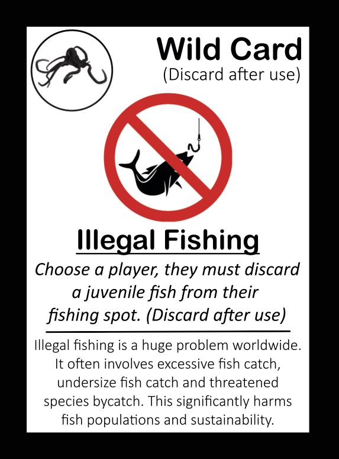
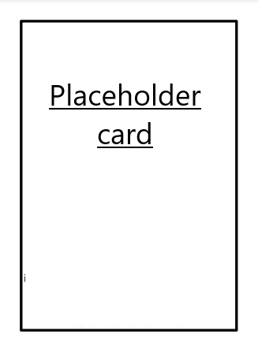

Wildcards
I’m thinking maybe a carousel/gallery of all the cards?
Catch and release
Releasing caught fish can greatly help fish populations. One must safely release fish that is too small or too large for the size limits (if minimum or maximum size limits are in place). Anglers also often chose to release unwanted fish or fish that are especially valuable for the ocean and fish populations, such as predatory or large fish. In fact, all fish are valuable in the sea, so all fish that will not be consumed should be released back safely. When released correctly, survival rates are very high, e.g. over 90% or even higher.

How to play
Choose a fish from the available face-up cards and either place it in your esky (cooler) or release it into your fishing spot. The size of the fish to be released will be mentioned on the card, and different cards have different sizes. Remember this card is discarded after use.
Learn more
“Keep Fish Wet” is a great organisation in the USA, working with anglers to increase survival in catch and release fishing. They have three main rules to ensure released fish have good chances to survive.
Learn how to release fish safely in this video with Steve Starling:
You can also learn about catch and release fishing from Australia’s great angler organisation OzFish.
Here is a great site with information on catch and release survival rates for different NSW fish species.

Centre for Marine Socioecology (CMS)
The Centre for Marine Socioecology (CMS) provides, develops and integrates multidisciplinary research to better understand and manage Australia’s oceans. They do this by connecting, cooperating and collaborating across multiple organisations and different research disciplines. Their members range from marine scientists to philosophers, artists, economists and more. Collaborative work across diverse disciplines is often hard to achieve but is extremely important when tackling complex sustainability challenges. The CMS card in Big Fish aims to highlight how working together produces broad and wide reaching benefits for everyone.

How to play
Draw two cards from the face-down card pile and put them in your hand. Then choose another player to draw one card from the face-down card pile that they will keep in their hand. Remember this card is discarded after use.
Learn more
Check out some of the amazing CMS initiatives, such as Curious Climate Schools, where all schools can join in to ask experts questions about climate change.
Check out also this Future Seas 2030 initiative, where a large group of researchers aimed to envision two alternative ocean futures for 2030. We can have a Business as usual or Sustainable and collaborative future. Which one do we chose? Don’t forget to watch this fun thriller Full metal aquatic on how the two futures might play out.
Why do we need to collaborate? Read more about it here

Citizen science
In the last decade, science and data collection have undergone a true revolution through what is called as citizen science. Collecting enough data or conducting large analyses is important in order to get more accurate information and knowledge. However, collecting large amounts of data can be difficult, time consuming and expensive. By creating ways for everyone to get involved and have input into a science project, the knowledge gained and the positive outcomes from research can be greatly amplified and shared with the wider community.

How to play
Choose a fish card currently in your hand and place it as a big fish into your fishing spot. Remember this card is discarded after use.
Learn more
There are plenty of citizen science initiatives for everyone to get involved into. Here are some examples:
Tassie Fish Frame Collection Program

Giant kelp
Kelp provides a huge, complex, and food filled habitat. It is essential for healthy oceans and healthy fish populations and it also serves as an important refuge for marine organisms. However, giant kelp around Australia has declined drastically over the last decades, with nearly 95% of kelp around Tasmania lost. This is mostly due to climate change and invasion of long-spined sea urchins, who eat a lot of kelp and create urchin barrens. Loss of natural urchin predators, such as large rock lobsters and other large predatory fish, is one of the reasons for kelp decline, and kelp forests often survive better in no-take marine protected areas with abundant urchin predators. This huge loss of natural underwater “forests” remains largely unknown by the general public. Many scientists and organisations are working to restore these kelp forests and we all can play a role by protecting rock lobsters and aiming to restore the abundance of large lobsters and other large fish.

How to play
If you have a Giant Kelp card in your fishing spot you may grow two larval fish into juvenile fish each turn. The rule of one grow increment per fish per turn still applies.
Learn more
Guardian article about kelp forest loss and restoration.
Watch these videos about giant kelp
Learn about giant kelp restoration efforts by IMAS, OzFish and The Nature Conservancy
Or read a scientific article about reasons for kelp decline and restoration efforts.

Humpback whale
Whales such as the humpback whale or blue whale are key species in cycling nutrients in the ocean. Known as whale pumps, these animals help by feeding in the deep oceans and pooping out large quantities of nutrients in shallow waters. These nutrients are essential for smaller species such as phytoplankton to grow. Many whale populations have been decimated by whaling, but populations of humpback whales have recovered in the last decades. This wild card shows how a visiting whale can provide positive impacts on a local environment. While they may consume some krill or small fish for food they also supply vital nutrients that are required for a healthy marine habitat and good fishing.

How to play
Discard a larval or juvenile fish from your fishing spot to grow a medium fish to a big fish. One grow per fish per turn still applies. Remember this card is discarded after use.
Learn more
A scientific article explaining the benefits of the “whale pump”.
A story about the investigation of the whale nutrient pump.
A popular article about great whales, threats and actions that can be taken to prevent them (with a focus on Canada).
Illegal fishing
Illegal fishing means fishing that does not follow existing regulations, be they minimum or maximum size limits, bag limits, marine protected areas or other rules. Fishing regulations are essential for sustainable fishing, but in various countries up to 20% of anglers may not obey these rules. This card shows catching fish below or above the determined size limit hurts the population and the fishing, although the damage will naturally depend on how large the overall population is in the fishing spot.

How to play
Choose a player, they must choose two juvenile fish from their fishing spot and discard them (juvenile fish are below the minimum size limit and should not be fished). Remember this card is discarded after use.
Learn more
Fishwatch allows you to report illegal fishing in Tasmania.
A scientific article about illegal fishing (not recreational) and societal well-being.
Large shark

How to play
Instructions.
Learn more
Marine protected area
How to play
Instructions.
Learn more
Poor water quality
How to play
Instructions.
Learn more
Seaweed
How to play
Instructions.
Learn more
Severe weather
How to play
Instructions.
Learn more
Shelfish reef
How to play
Instructions.